This page brings together basic information about the Gurmukhi script and its use for the Punjabi language. It aims to provide a brief, descriptive summary of the modern, printed orthography and typographic features, and to advise how to write Punjabi using Unicode.
Sample
Select part of this sample text to show a list of characters, with links to more details. Source
Change size: 28px
The Gurmukhi script is used in the Punjab in India, where it is the official script of the Punjabi language. The original Sikh scriptures and most of the historic Sikh literature were written in the Gurmukhi script.
Muslim speakers of Punjabi in Pakistan use a Persian version of the Arabic script (called shahmukhi).
ਗੁਰਮੁਖੀ
The current form of Gurmukhi was developed in the 16th century by Guru Angad, successor to the founder of the Sikh religion, Guru Nanak. It's roots lie in the historical Brahmi script.
The Gurmukhi script is an abugida, ie. consonants carry an inherent vowel sound that is overridden using vowel signs. See the table to the right for a brief overview of features for the modern Panjabi orthography.
Gurmukhi text runs left to right in horizontal lines.
Words are separated by spaces.
Gujarati uses 32 consonant letters. The repertoire can be extended by applying the nukta diacritic to 5 characters, to represent foreign sounds, particularly for words from Persian. ❯ consonants
A final h can be indicated using the visarga, but otherwise final consonants are written using ordinary characters. ❯ finals
Although consonant clusters are frequent, there are very few conjuncts, mostly just r and h, which are subjoined. This leads to difficulties for automatic transcription. ❯ clusters
Consonant gemination is indicated, unusually for an Indian script, by a special diacritic that appears before the letter being lengthened. ❯ gemination
The Punjabi orthography has an inherent vowel, and represents other vowels using 9 vowel signs, including 1 pre-base vowel and no circumgraphs. All vowel signs are combining marks, and are stored after the base character. The inherent vowel is usually not pronounced at the end of a word, however there is often a ghost ᵊ. ❯ vowels
There are 10 independent vowels, one for each vowel sound, including the inherent vowel, and these are used to write all standalone vowel sounds. There are no unique shapes for independent vowels. Instead vowel signs are added to one of three consonants that are used only as vowel carriers, however Unicode provides separate code points for all the combinations and deprecates the use of 2 of the carriers. ❯ standalone
There are two diacritics for nasalisation, tippi and bindi, each used in different phonetic contexts. ❯ nasalisation
Punjabi is a tonal language. Tones are normally indicated by the use of certain consonants, rather than diacritics. ❯ tones
Gurmukhi has its own set of native digits, however modern text tends to use ASCII digits. ❯ numbers
Click on the sounds to reveal locations in this document where they are mentioned.
Phones in a lighter colour are non-native or allophones. Source Wikipedia.
Vowel sounds
Consonant sounds
labial
dental
alveolar
post-
alveolar
retroflex
palatal
velar
glottal
stops
pb
td
ʈɖ
kɡ
aspirated
pʰ
tʰ
ʈʰ
kʰ
affricates
t͡ʃd͡ʒ
aspirated
t͡ʃʰ
fricatives
fv
sz
ʃ
xɣ
ɦ
nasals
m
n
ɳ
ɲ
ŋ
approximants
ʋ~w
l
ɭ
j
trills/flaps
ɾ
ɽ
Note that Punjabi has no voiced aspirated stops. The letters for these sounds do exist in Gurmukhi, but are redirected to indicate tone.
Structure
The following summary is from Wikipediawl.
The three retroflex consonants /ɳ, ɽ, ɭ/ do not occur initially, and the nasals /ŋ, ɲ/ occur only as allophones of /n/ in clusters with velars and palatals.
The well-established phoneme /ʃ/ may be realised allophonically as the voiceless retroflex fricative /ʂ/ in learned clusters with retroflexes.
The phonemic status of the fricatives /f, z, x, ɣ/ varies with familiarity with Hindustani norms, more so with the Gurmukhi script, with the pairs /f, pʰ/, /z, d͡ʒ/, /x, kʰ/, and /ɣ, g/ systematically distinguished in educated speech.
The retroflex lateral is most commonly analysed as an approximant as opposed to a flap.
Gurmukhi uses spaces to separate text into words. The inherent vowel is usually not pronounced at the end of a word, however there is often a ghost sound ᵊ, eg.
ਜਾਲ਼
Gurmukhi tends to use independent vowels rather than semi-vowels for sequences of vowel sounds, eg.
ਓਹਾਇਓ
Tone
Punjabi is a tonal language with three tones: high (transcribed as á), low (transcribed as à), and level (not transcribed). The tones cover one or two syllables.d
About 75% of words have a level tone.wl,#Tone
Sometimes these are described as contour tones: high rising falling, and low rising.
In some respects there appears to be a lack of clarity about the fine detail of how the tonal system works.b
Vowels
Inherent vowel
ਕ
kəU+0A15 GURMUKHI LETTER KA
ə following a consonant is not written, but is seen as an inherent part of the consonant letter, so kə is written by simply using the consonant letter. The sound is transcribed as a.
Other vowels
Non-inherent vowel sounds that follow a consonant are represented using vowel signs.
Gujarati vowel signs are all combining characters. A single Unicode character is used per base consonant, and there are no circumgraphs. All vowel signs are typed and stored after the base consonant, whether or not they precede it when displayed, and the rendering process puts them in the correct place for display.
An orthography that uses vowel signs is different from one that uses simple diacritics or letters for vowels, in that the vowel signs are generally rendered relative to an orthographic syllable, rather than just applied to the letter of the immediately preceding consonant (see prebase_vowels for an example).
Three of the vowel signs are spacing marks, meaning that they consume horizontal space when added to a base consonant.
Combining marks used for vowels
ਕੀ
kiU+0A15 GURMUKHI LETTER KA + U+0A40 GURMUKHI VOWEL SIGN II
Punjabi uses the following dedicated combining marks for vowels.
ਿ␣ੀ␣ੂ␣ੁ␣ੇ␣ੋ␣ੈ␣ੌ␣ਾ
Vowels ɪ and ʊ tend to be pronounced differently in certain contexts. Followed by
ਹ [U+0A39 GURMUKHI LETTER HA]
they become the high tone éː and óː, respectively,d, eg.
ਕਿਹੜਾ
ਕੁਹੜਾ
The combination of an inherent vowel followed by
ਹ [U+0A39 GURMUKHI LETTER HA]
and then one of these 2 letters produces ɛ́ː and ɔ́ː, respectivelyd, eg.
ਕਹਿਣਾ
ਵਹੁਟੀ
Pre-base vowel sign
ਕਿ
kéU+0A15 GURMUKHI LETTER KA + U+0A3F GURMUKHI VOWEL SIGN I
One vowel sign appears to the left of the base consonant letter or cluster, eg. ਕਿ
ਿ
This is a combining mark that is always stored after the base consonant. The rendering process places the glyph before the base consonant. Click on the following word to see the sequence of characters in storage.
ਕਹਿਣਾ
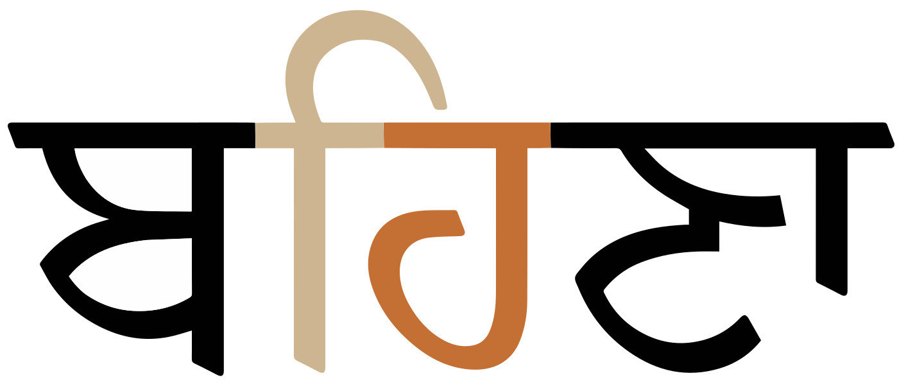
A prebase vowel, rendered to the left of the consonant after which it is pronounced.detailsਬਹਿਣਾ
Vowel sign placement
The following list shows where vowel signs are positioned around a base consonant to produce vowels, and how many instances of that pattern there are.
1 pre-base, eg. ਕਿkɪ
2 post-base, eg. ਕੀkī
4 superscript, eg. ਕੇke
2 subscript, eg. ਕੁkʊ
At maximum, vowel components can occur concurrently on 1 side of the base.
Standalone vowels
Gurmukhi represents standalone vowels using a set of independent vowel letters. The set includes a character to represent the inherent vowel sound.
In fact, all independent vowels in Gurmukhi are graphically a combination of one of the following three vowel carriers and a vowel sign.
ੲ␣ੳ␣ਅ
However while it's also possible to type them in this way, the Unicode Standard actually recommends that the precomposed characters be used instead. The precomposed letters don't decompose in Normalization Form D.
The use of the following characters is therefore deprecated by the Unicode Standard.
ੲ␣ੳ
Nasalisation
ੰ␣ਂ
Two separate diacritics are used to indicate nasalisation.
These diacritics can also signal gemination of a following m or n, eg.
ਲੰਮੀ
Note that if a tippi is used in a location where bindi is more appropriate, some fonts may silently convert the shape to a dot.
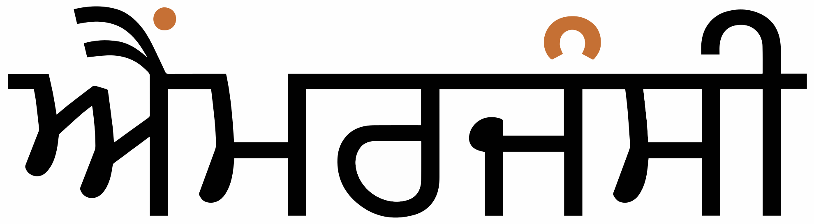
The word for smoke contains both bindi and tippi.details
ਧੂੰਆਂ
Vowel absence
Unlike most other indic scripts, there is generally no indication when a consonant is not pronounced with a following inherent vowel. (For the few occasions where this is made clear see clusters.) Generally speaking, the reader simply has to know whether an inherent vowel is pronounced or not, eg. ਉਤਸੁਕ
The inherent vowel is generally not pronounced at the end of a word (see the previous example), however the last letter is often followed by a ᵊ ghost, eg.
ਅੱਜ
Gurmukhi can use ੍ [U+0A4D GURMUKHI SIGN VIRAMA] (called halant in Punjabi) to kill the inherent vowel after a consonant, but it is rarely seen. It isn't used at the end of a word, and is normally only used in modern Punjabi for subjoined r, ʋ (rare), and h, in which case it is invisible.
The virama may also be used occasionally to suppress the vowel in Sanskritised text, or in dictionaries for extra phonetic information.
Tones
Gurmukhi doesn't normally use tone diacritics. Instead, certain character combinations serve to indicate high and low tones. The level tone is not marked.
Tonal stop letters
Five of the consonants – those nominally representing voiced, aspirated sounds in the Brahmi model – indicate changes in tone. The articulatory pronunciation is unaspirated and, when syllable-initial, unvoiced.
ਘ␣ਝ␣ਢ␣ਧ␣ਭ
These letters indicate a low tone when they appear at the beginning of a word or syllable or medially between a short and long vowel, eg.
Gujarati uses 32 consonant letters. The repertoire can be extended by applying the nukta diacritic to 5 characters, to represent foreign sounds, particularly for words taken from Persian.
A final h can be indicated using the visarga, but otherwise final consonants are written using ordinary characters.
Although consonant clusters are frequent, there are very few conjuncts, mostly just r and h, which are subjoined. This leads to difficulties for automatic transcription.
Consonant gemination is indicated, unusually for an Indian script, by a special diacritic that appears before the letter being lengthened.
Basic consonants
Gurmukhi has a set of consonants that mostly map onto the traditional Brahmi phonetic matrix, though not all are used for articulatory distinctions.
਼ [U+0A3C GURMUKHI SIGN NUKTA] is used to represent foreign sounds, particularly for words taken from Persian, eg. in the following example the dot changes
ਗɡ
to
ਗ਼ɣ
and
ਜs
to
ਜ਼z
ਕਾਗ਼ਜ਼
The following graphemes combine nukta with an existing consonant.
ਫ਼␣ਜ਼␣ਸ਼␣ਖ਼␣ਗ਼␣ਲ਼
The nukta should always be typed and stored immediately after the consonant it modifies, and before any combining vowels or diacritics.
ਲ਼ [U+0A32 GURMUKHI LETTER LA + U+0A3C SIGN NUKTA] is different from the other extended letters in that it represents a native Punjabi sound. This letter was only recently added to the Gurmukhī alphabet. Some sources do not consider it a separate letterws, and it may not always be written. It tends to get used in dictionaries to clarify pronunciation.
These graphemes are normally represented by decomposed sequences, and in fact that is what is produced by Unicode Normalization Form C (NFC). However, there are also a set of precomposed code points in the Unicode Gurmukhi block.
ਫ਼␣ਜ਼␣ਸ਼␣ਖ਼␣ਗ਼␣ਲ਼
The Unicode Standard recommends not to use the precomposed code points for Gurmukhi, but instead to use the base + nukta sequences. See also encoding.
Tone-related consonants
Gurmukhi uses certain characters to indicate high and low tones. These include the letters that are nominally associated with aspirated, voiced plosives (which sounds don't exist in Punjabi) and the letter ਹ [U+0A39 GURMUKHI LETTER HA].
Syllable-final consonant sounds are generally represented by ordinary consonant characters (or perhaps a conjunct with h for tonal indications). However, a final h can sometimes be represented by the visarga (ਃ [U+0A03 GURMUKHI SIGN VISARGA]).
Consonant clusters
Consonant clusters are written in one of the following ways:
Clusters of consonants without intervening vowel sounds are generally not marked in Gurmukhi. It is necessary to just know that the vowel should not be pronounced, eg.
ਉਤਸੁਕ
Vertical stacks
੍
Normally Gurmukhi produces stacks to indicate a consonant cluster for only 3 combinations. In each case, the second letter in the cluster appears subjoined to the first.
The character h in non-initial position is used to indicate tones (see consonant_tones). When the h follows a consonant, it is subjoined to it, eg. ਚੜ੍ਹ
Syllable-initial clusters also occur with r and occasionally v, and are also indicated using subjoined forms, eg. ਪ੍ਰਬੰਧਸ੍ਵਰਗ Subjoined v is much less common in modern text.
The virama may also be used occasionally to suppress the vowel in Sanskritised text, or in dictionaries for extra phonetic information.ws In some fonts subjoined forms are available for other consonant clusters, though they are not used unless the content author uses a virama.
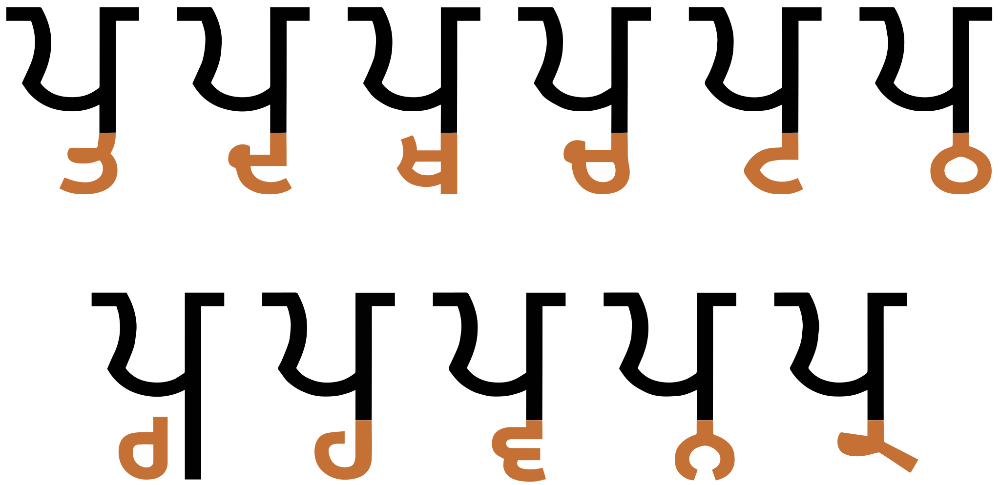
Conjunct forms produced after the letter p by the Mukta Mahee font. They include the following sounds, in order of appearance: pt pd ptʰ pt͡ʃ pʈ pʈʰ pg pɦ pʋ pn pr.
Occasionally, a cluster ending with y is rendered using
ੵ [U+0A75 GURMUKHI SIGN YAKASH],
though this appears to be quite rare, eg.
ਕਲੵਚਰੈkly̆ʧrɛculture
Geminated consonants
Doubling or reinforcement of a consonant sound is indicated, unusually for an indic script, using a diacritic, ੱ [U+0A71 GURMUKHI ADDAK]. It is typed before the consonant (In this way it resembles the small tsu in Japanese), and is placed to the left of the consonant it affects (not over it), eg. ਪੱਕੀ
The diacritic may appear over the right side of the preceding consonant, but if that consonant has a vowel sign or extension above the horizontal topline, it may be displayed on a short extension of the joining line.
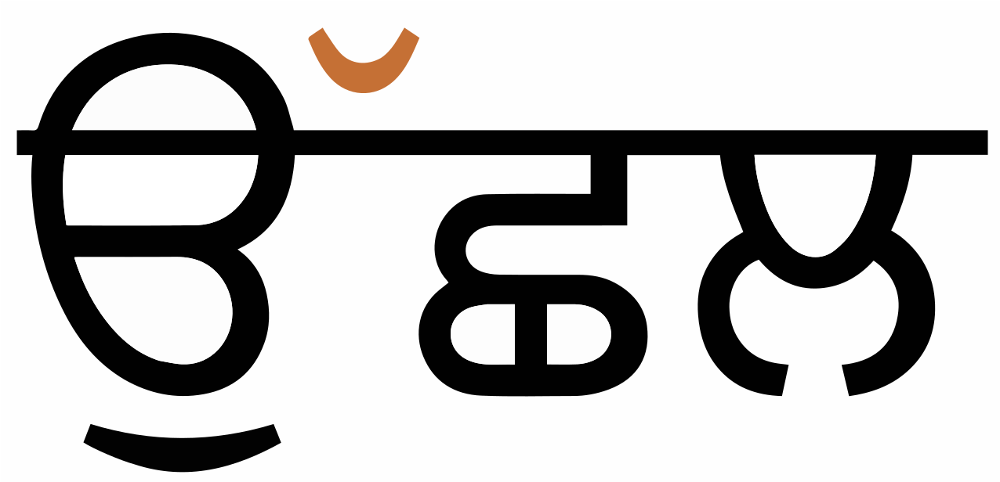
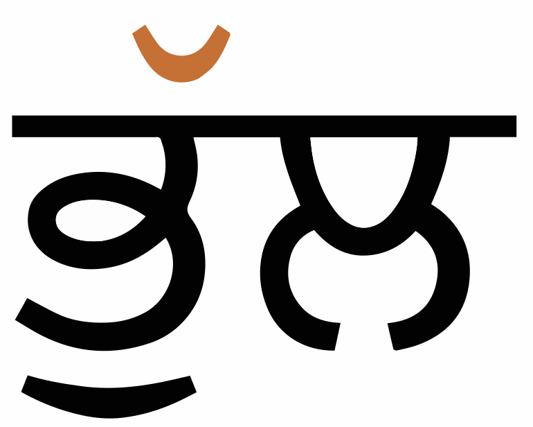
Placement of the addak diacritic
Geminated mm and nn may be written using a nasalisation diacritic associated with the preceding vowel,d eg. ਲੰਮੀ
Encoding choices
This section looks at alternative strategies for typing and storing the nukta and considers the effects of normalising the text using Unicode Normalisation Form D (NFD), and Normalisation Form C (NFC).
The decomposed form is recommended by the Unicode Standard. NFC does not recombine the parts into precomposed characters. Instead, normalisation produces decomposed forms for both NFC and NFD. So both alternatives are canonically equivalent, but decomposed is recommended.
ੴ [U+0A74 GURMUKHI EK ONKAR] can have various different forms. Unicode classes it as a letter. The shape in the Unicode charts is highly stylised.
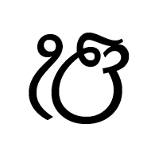
The stylised shape of ek onkar in the Unicode chart.
The other religious symbol, ☬ [U+262C ADI SHAKTI], is encoded in Unicode's Miscellaneous Symbols block.
Numbers
Gurmukhi has its own set of decimal digits, however modern text tends to use ASCII digits.ws
੦␣੧␣੨␣੩␣੪␣੫␣੬␣੭␣੮␣੯
In some cases the choice of digits depends on the context. For example, list counter styles often use Gurmukhi digits, whereas postcodes, route numbers, and ordinal dates, etc. tend to use ASCII digits.@GitHub,https://github.com/r12a/scripts/issues/118#issuecomment-1235187772
Text direction
Gurmukhi script runs left to right in horizontal lines.
This section brings together information about the following topics:
writing styles;
cursive text;
context-based shaping;
context-based positioning;
baselines, line height, etc.;
font styles;
case & other character transforms.
Gurmukhi text is not cursive (ie. joined up like Arabic).
The orthography has no case distinction, and no special transforms are needed to convert between characters.
Font styling & weight
tbd
Graphemes
Grapheme clusters
tbd
Punctuation & inline features
Word boundaries
Words are separated by spaces.
Some grammatical suffixes are separated from their stem by a space, and the two parts should not be separated.@GitHub,https://github.com/r12a/scripts/issues/118#issue-1359804026
Punjabi texts typically use quotation marks. Of course, due to keyboard design, quotations may also be surrounded by ASCII double and single quote marks.
Single quotation marks are used for quotations within quotations.
Emphasis
tbd
Abbreviation, ellipsis & repetition
ਃ [U+0A03 GURMUKHI SIGN VISARGA] is used very occasionally in Gurmukhi. In some cases it acts like a Sanskrit visarga, producing a voiceless h sound, but in others it represents an abbreviation, in the same way the period is used in English.ws
However, contractions are very common in Punjabi text, and a much more common way of indicating these is to use
' [U+0027 APOSTROPHE].
A particularly common contraction is to represent ਵਿੱਚ as 'ਚ. @GitHub,https://github.com/r12a/scripts/issues/118#issue-1359804026
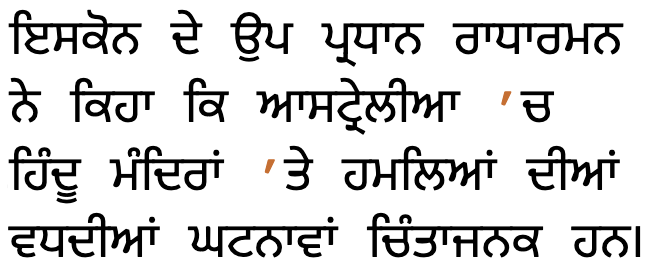
Examples of abbreviated words using apostrophes.translation
ISKCON Vice President Radharaman said that the increasing incidence of attacks on Hindu temples in Australia is alarming.
Inline notes & annotations
tbd
Other punctuation
CLDR also lists the following non-ASCII characters.
‐␣–␣—␣′␣″
Other inline text decoration
tbd
Line & paragraph layout
Line breaking & hyphenation
By default, Gurmukhi breaks lines at inter-word spaces.
This section looks at ways in which spacing is applied between characters over and above that which is introduced during justification.
Baselines, line height, etc.
Gurmukhi uses the so-called 'alphabetic' baseline, which is the same as for Latin and many other scripts.
It also has a 'hanging baseline', which may be used for text alignment in things such as initial letter highlighting. The hanging baseline is based on the top bar that joins the letters.
Gurmukhi requires slightly more vertical space than Latin text. To give an approximate idea, fig_baselines compares Latin and Gurmukhi glyphs from Noto fonts. The basic Gurmukhi letters are typically slightly higher than the Latin x-height, and conjunct stacks and other diacritics extend slightly below the Latin descenders. The hanging baseline is slightly higher than the Latin x-height (Noto fonts actually have a lower top bar than many others).
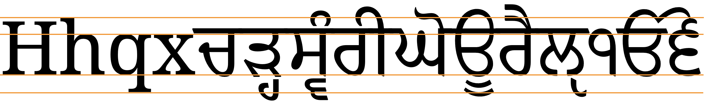
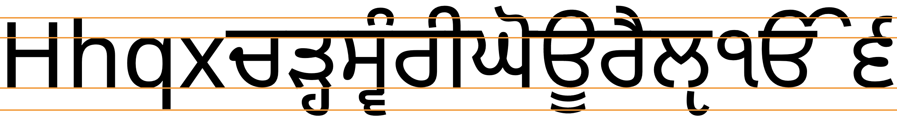
Font metrics for Latin text compared with Gurmukhi glyphs in the Noto Serif Gurmukhi (top) and Noto Sans Gurmukhi (bottom) fonts.
fig_baselines_other shows similar comparisons for the Baloo Paaji 2 and Raavi fonts.
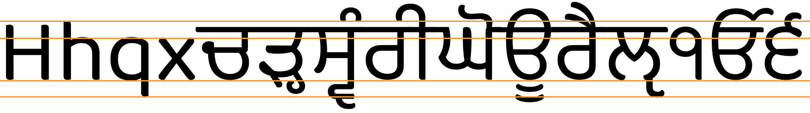
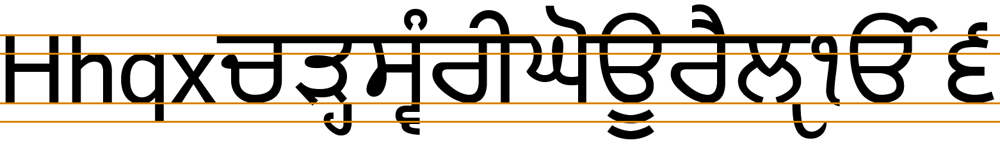
Latin font metrics compared with Gurmukhi glyphs in the Baloo Paaji (top) and Raavi (bottom) fonts.
Counters, lists, etc.
You can experiment with counter styles using the Counter styles converter. Patterns for using these styles in CSS can be found in Ready-made Counter Styles, and we use the names of those patterns here to refer to the various styles.
The modern Punjabi orthography uses a native numeric style.
Numeric
The gurmukhi numeric style is decimal-based and uses these digits.rmcs
੧␣੨␣੩␣੪␣੫␣੬␣੭␣੮␣੯␣੦
Examples:
੧␣੨␣੩␣੪␣੧੧␣੨੨␣੩੩␣੪੪␣੧੧੧␣੨੨੨␣੩੩੩␣੪੪੪
Prefixes and suffixes
Punjabi commonly uses a full stop + space as a suffix.
Examples:
੧. ੨. ੩. ੪. ੫.
Separator for Punjabi list counters: full stop + space.
Styling initials
tbd
Page & book layout
This section is for any features that are specific to Gurmukhi and that relate to the following topics:
general page layout & progression;
grids & tables;
notes, footnotes, etc;
forms & user interaction;
page numbering, running headers, etc.
References
Acknowledgements
Thanks to @bgo-eiu for extensive comments on an early version of this page.